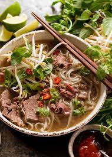

Beef Pho

South Vietnamese-style pho. A comforting, richly-seasoned beef broth is ladled over rice noodles and thinly sliced beef. Serve with hoisin, Sriracha, green onion, cilantro, bean sprouts, basil, and lime.
Description
Phở or pho (UK: /fɜː/, US: /fʌ/, Canada: /fɔː/; Vietnamese: [fəː˧˩˧] (listen)) is a Vietnamese soup dish consisting of broth, rice noodles (bánh phở), herbs, and meat (usually beef (phở bò), sometimes chicken (phở gà)). Pho is a popular food in Vietnam where it is served in households, street stalls and restaurants countrywide. Pho is considered Vietnam's national dish.
Pho originated in the early 20th century in northern Vietnam, and was popularized throughout the world by refugees after the Vietnam War. Because pho's origins are poorly documented, there is disagreement over the cultural influences that led to its development in Vietnam, as well as the etymology of the name. The Hanoi (northern) and Saigon (southern) styles of pho differ by noodle width, sweetness of broth, and choice of herbs.
Ingredients
- pounds beef soup bones
- 1 tablespoon salt
- 2 medium onions, quartered
- 1 (4 inch) piece fresh ginger root
- 2 pounds beef oxtail
- 1 white (daikon) radish, sliced
- 2 ounces whole star anise pods
- ½ (3 inch) cinnamon stick
- 2 whole cloves
- 1 teaspoon black peppercorns
- 1 tablespoon white sugar
- 1 tablespoon fish sauce
- 1½ pounds dried flat rice noodles
- ½ pound frozen beef sirloin
Steps
- Place the beef bones in a 9-quart (or larger) pot. Season with salt, and fill pot with 2 gallons of water. Bring to a boil, reduce heat, and simmer for about 2 hours.
- Meanwhile, preheat broiler. Put onions and unpeeled ginger on a foil-lined, 10x15-inch roasting pan. Broil 4 to 5 inches from heat until onion and ginger are charred, 10 to 15 minutes. Cool slightly. Chop onions. Peel and slice ginger.
- Skim fat from surface of broth, and add oxtail, daikon, and charred onions. Tie anise, cinnamon stick, cloves, peppercorns and charred ginger in a square of cheesecloth; add to broth. Stir in sugar, fish sauce, and remaining 2 tsp. salt. Simmer over medium-low heat at least 4 hours (the longer, the better). Strain broth. Discard spices and bones. Reserve meat from bones for other uses, if desired. Taste broth and add additional salt as needed. Chill overnight.
- Skim fat from top of chilled broth. Bring broth to a boil; reduce heat and keep hot until ready to serve.
- Cook rice noodles in boiling water according to package directions until soft, but not mushy. Cut sirloin into paper-thin slices.